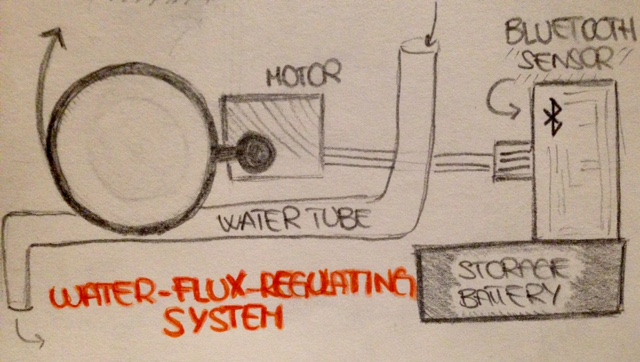

Actually, my final project still doesn't have a proper name but it can already present its main components:
These three are the elements I need to create an automatic plant
irrigation system whose working principle is bluetooth technology.
I will discover how to create the electronic device that makes
my engine working during the next weeks but meanwhile I started
organizing my work by making few drawings about the components.
Doing so, I'll be able to focus and plan the procedure for each one more precisely.
The pots are intented modular in the vertical direction, since the trilobed contour is rotated of 120°
each layer going up.
They are also provided of a tiny bottleneck-tool at the external bottom of each lobe,
that helps water falling on the lower layers.
Actually, that's the key component of the entire system, since it has to send info about the soil condition.To do so, inside the leaf-shaped tool, there's a bluetooth sensor that sends signals when the soil lacks of water and it can be recharged by means of a USB port, instead of being continously linked to electricity.
 The mechanical system, that will be placed close to a water collector, is activated by an electonic device that receive signals from the humidity sensor and trandfers them to the engine. This one is linked to a tiny wheel that, at the signal reception, rotates in clockwise direction, release the tube and let the water pass. As the soil reaches the right level of humidity, another signal is sent and the flux is stopped.